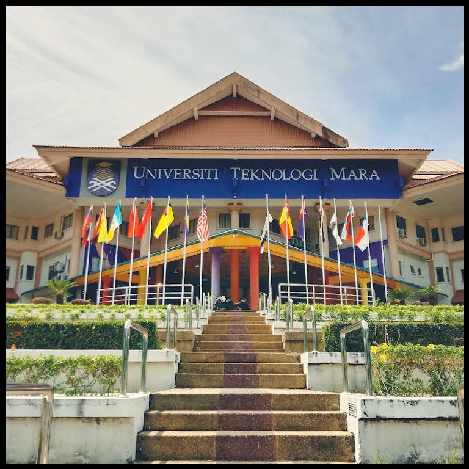

I began my educational path here when I was between the ages of 6 to 12 years old. I learn a lot and make many memories here. Although this is a girls-only school, I had a great time back then.
2015 - 2019
SMK SERI MULIA, KUALA LUMPUR
This is the beginning of my adolescent years. I finished my PT3 and SPM exams here. I also made a lot of new acquaintances and experienced a lot. In addition, I participated in the school prefect department, where I stood as treasurer.
2020 - 2023
UiTM KELANTAN, CAMPUS MACHANG

I will thereafter carry on with my education at UiTM Machang in Kelantan. I began to live freely without my parents at this point. It was quite difficult, but I was able to endure it. Even though I initially felt homesick, with the support of my friends, I was able to feel secure and decide to take this on as a challenge.